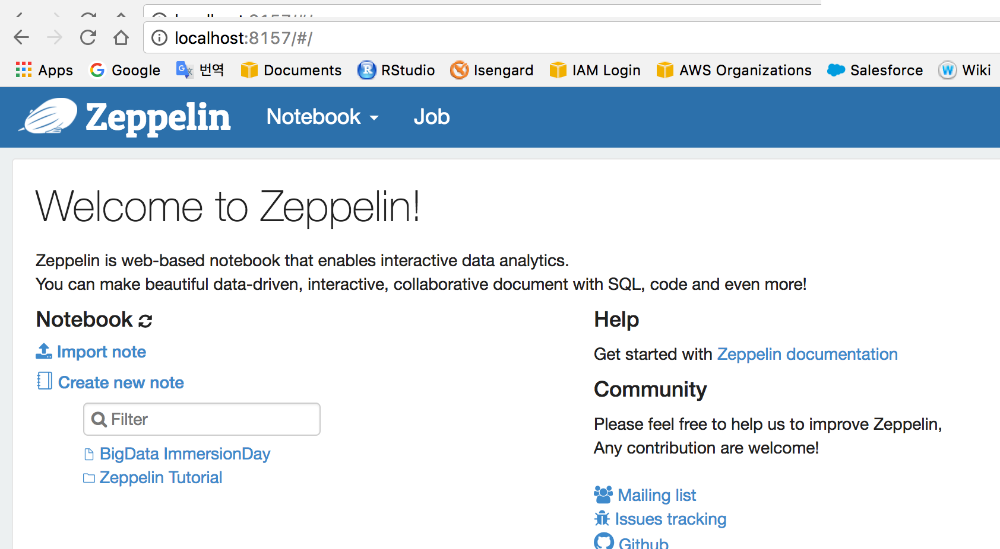
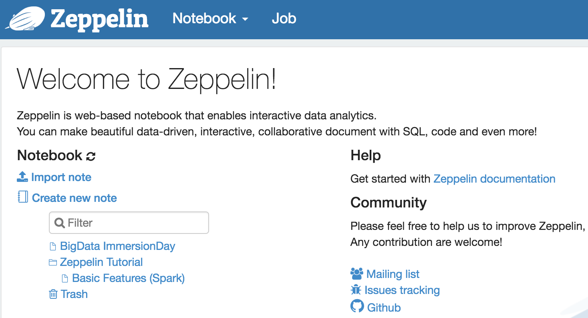
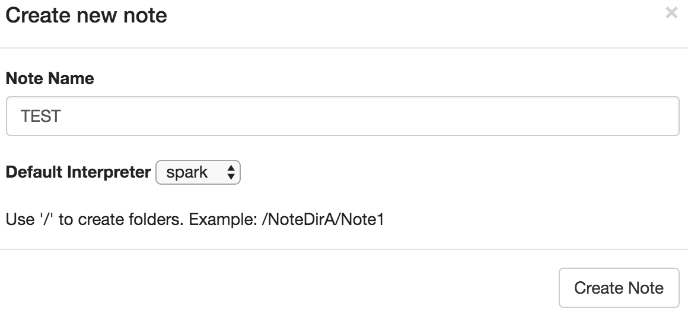
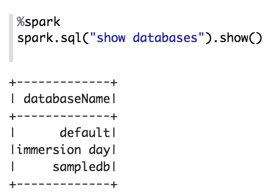
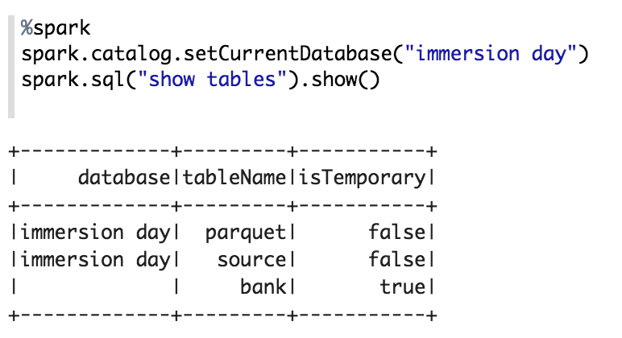

실습3. EMR을 이용한 Hadoop 클러스터 구성 및 데이터 분석
Amazon EMR은 관리형 Hadoop 프레임워크로서 빠르게 빅데이터 분석을 위한 Hadoop 클러스터 구성을 할 수 있습니다.
EMR 클러스터 생성
EMR 클러스터를 구성합니다. 본 Lab에서는 Spark와 Zeppelin을 활용합니다.
1. AWS Management Console에 로그인 한 뒤 N.Virginia Region의 EMR 서비스에 접속합니다.
2. Create cluster 버튼을 선택하여 클러스터 구성을 시작합니다.
3. Go to advanced options 버튼을 선택하여 원하는 애플리케이션을 직접 선택하여 구성합니다.
 4. Release는 emr-5.25.0, 소프트웨어는 Spark 2.4.3과 Zeppelin 0.8.1를 선택하고 “Use for Hive table metadata” 및 “Use for Spark table metadata”를 선택합니다.
4. Release는 emr-5.25.0, 소프트웨어는 Spark 2.4.3과 Zeppelin 0.8.1를 선택하고 “Use for Hive table metadata” 및 “Use for Spark table metadata”를 선택합니다.
 5. 하드웨어 구성 단계에서는 Network 선택에서 vpc-xxxxx 를 선택하고 EC2 Subnet에서는 가장 상단의 항목을 선택합니다. 나머지 항목은 그대로 두고 Next 를 클릭합니다.
5. 하드웨어 구성 단계에서는 Network 선택에서 vpc-xxxxx 를 선택하고 EC2 Subnet에서는 가장 상단의 항목을 선택합니다. 나머지 항목은 그대로 두고 Next 를 클릭합니다.
 6. Cluster name에 원하는 클러스터 이름을 입력하고, Termination protection 옵션은 체크 해제 합니다. Next를 클릭합니다.
6. Cluster name에 원하는 클러스터 이름을 입력하고, Termination protection 옵션은 체크 해제 합니다. Next를 클릭합니다.
 7. Security Options에서 앞에서 생성한 EC2 key pair를 선택합니다.
7. Security Options에서 앞에서 생성한 EC2 key pair를 선택합니다.
 8. 다음과 같이 두 단계로 Security를 설정합니다.
8. 다음과 같이 두 단계로 Security를 설정합니다.
 1 단계) EC2 Security Groups 섹션에서 Master와 Core&Task의 EMR managed security groups 에는 모두 각각 default 그룹을 설정하고
1 단계) EC2 Security Groups 섹션에서 Master와 Core&Task의 EMR managed security groups 에는 모두 각각 default 그룹을 설정하고
 2 단계) Master 노드의 Additional security groups에는 사전 준비에서 생성했던 security group (Port 22 허용)을 추가로 할당합니다.
2 단계) Master 노드의 Additional security groups에는 사전 준비에서 생성했던 security group (Port 22 허용)을 추가로 할당합니다.
 9. 화면 하단의 Create cluster를 선택하여 클러스터를 생성합니다.
9. 화면 하단의 Create cluster를 선택하여 클러스터를 생성합니다.
EMR 클러스터 생성에 약 10분~15분 정도 소요됩니다.
 10. 클러스터의 Status가 Waiting (Cluster ready)이 되면 다음 Lab을 진행합니다.
10. 클러스터의 Status가 Waiting (Cluster ready)이 되면 다음 Lab을 진행합니다.

EMR Web Connection 설정 (Windows OS)
- 생성한 클러스터를 선택하여 Master DNS 정보를 확인합니다.

- SSH의 Tunnels에서 Source port에 8157을 Destination에는 localhost:8890 을 입력한 뒤 Add를 클릭합니다.

- Auth에는 EMR 클러스터 생성시에 사용한 Key pair의 .ppk 키를 추가합니다.
마지막으로 Session의 Host Name에는 다음을 입력한 뒤 Open을 클릭하여 접속합니다.
hadoop@<Master Public DNS>

브라우저에서 http://localhost:8157 주소로 접속합니다.

EMR Web Connection 설정 (Mac OS / Linux OS)
- 간단히 마스터 노드와의 SSH 터널을 만들어 접근할 수 있습니다.
- Master public DNS를 확인합니다.

터미널에서 다음 명령어를 입력합니다. 응답을 반환 하지는 않습니다.
ssh -i “<Key pair name>” -N -L 8157:localhost:8890 hadoop@<Master public DNS>
브라우저에서 http://localhost:8157 주소로 접속합니다. 
Zeppelin을 활용한 빅데이터 분석
- Zeppelin Tutorial 을 클릭합니다.

- 여러분은 S3 (EMRFS)에 저장된 데이터(각 필드가 ‘;’로 구분)로 부터 6개의 컬럼을 읽어 필요한 자료형을 적용하고 이를 임시 테이블로 저장하는 코드를 볼 수 있습니다.

원본 코드에서 추가로 몇몇 컬럼을 더 가져오기(6번째 12번째 컬럼을 추가로 활용) 위하여 https://github.com/setch3000/emr-s3/blob/master/sample.scala 에서 샘플 코드를 복사하여 Zepplelin notebook의 Cell에 붙여 넣기를 한 후 ▷버튼을 눌려 다시 한번 실행 해 봅니다.

%spark import org.apache.commons.io.IOUtils import java.net.URL import java.nio.charset.Charset //Load Bank Data val bankText = sc.parallelize( IOUtils.toString( new URL("https://s3.amazonaws.com/apache-zeppelin/tutorial/bank/bank.csv"), Charset.forName("utf8")).split("\n")) case class Order(age: Integer, job: String, marital: String, education: String, amount: Integer, housing: String, campaign: String) val bank = bankText.map(s => s.split(";")).filter(s => s(0) != "\"age\"").map( s => Order(s(0).toInt, s(1).replaceAll("\"", ""), s(2).replaceAll("\"", ""), s(3).replaceAll("\"", ""), s(5).replaceAll("\"", "").toInt, s(6).replaceAll("\"", ""), s(12).replaceAll("\"", "") ) ).toDF() bank.registerTempTable(“bank") bank.show()로딩 된 데이터를 바탕으로 다양한 분석을 진행 해 봅니다.
4.1 결혼 여부 / 주택 소유 여부에 따른 평균 이용 금액%sql select marital,housing, avg(amount) from bank group by marital, housing 4.2 직업별 평균 이용 금액
4.2 직업별 평균 이용 금액%sql select job, avg(amount) from bank group by job order by 2 4.3 20대 나이별 평균 이용 금액
4.3 20대 나이별 평균 이용 금액%sql select age, avg(amount) from bank where age > ${minAge=19} and age < ${maxAge=30} group by age 4.4 연령/교육 수준별 이용 금액
4.4 연령/교육 수준별 이용 금액%sql select age, amount, education, housing from bank 4.5 직업 별 평균 마케팅 노출 횟수
4.5 직업 별 평균 마케팅 노출 횟수%sql select job, avg(campaign) as campaign from bank group by job 4.6 결혼 직업 별 이용 금액 합계
4.6 결혼 직업 별 이용 금액 합계%sql select marital, job, sum(amount) from bank group by marital, job
분석 결과를 그래프로 표현 하면 아래와 같이 원하는 정보를 같은 방식으로 분석할 수 있습니다.

Glue Data Catalog를 활용하여 S3에 저장된 데이터 분석
EMR 클러스터에서 Glue의 카탈로그를 조회하여 손쉽게 S3에 저장된 데이터를 분석 할 수 있습니다.
1. 화면 좌측 상단의 Zeppelin 이미지를 클릭하여 Zeppelin의 첫페이지로 이동합니다.
2. Create new note 버튼을 클릭 합니다.

3. ’TEST’라는 이름으로 새 노트를 생성 합니다.

4. Glue의 카탈로그를 조회하여 데이터베이스 리스트를 확인 합니다.
%spark
spark.sql("show databases").show()
 5. 확인된 데이터베이스 리스트 중 “immersion day”의 테이블들을 확인해 봅니다.
%spark
spark.catalog.setCurrentDatabase("immersion day")
spark.sql("show tables").show()
 6. 다음과 같이 쿼리를 수행하여 데이터 분석을 진행 합니다.
%sql
select region, status, count(*)
from parquet
group by region, status
order by region

Option : EMR 클러스터에 노드 추가
EMR 클러스터에서 Hadoop의 슬레이브 노드에 해당하는 작업을 실행하는 Core 노드와 Task 노드를 쉽게 추가할 수 있습니다.
1. AWS Management Console에 로그인 한 뒤 EMR 서비스에 접속합니다.
2. 생성한 클러스터를 선택한 후, Hardware 탭을 선택합니다.
 3. Core의 Instance Count의 Resize 버튼을 클릭하여 3 으로 변경합니다.
3. Core의 Instance Count의 Resize 버튼을 클릭하여 3 으로 변경합니다.
 4. Add task Instance group을 클릭하여 Task 노드를 1개 추가합니다.
5. Core와 Task 노드의 크기 변경이 시작됩니다. 각 노드에 Auto Scaling을 적용할 수도 있습니다.
4. Add task Instance group을 클릭하여 Task 노드를 1개 추가합니다.
5. Core와 Task 노드의 크기 변경이 시작됩니다. 각 노드에 Auto Scaling을 적용할 수도 있습니다.

© 2019 Amazon Web Services, Inc. 또는 자회사, All rights reserved.